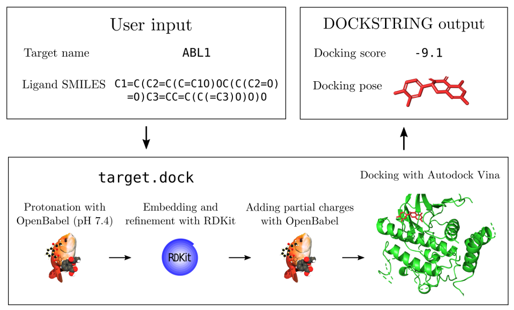

Recerca de nous fàrmacs amb intel·ligència artificial
Estudiarem molts possibles nous fàrmacs similars o derivats de fàrmacs coneguts emprant diferents eines: QSAR, docking molecular i recerca amb algorismes aprenentatge profund amb diverses biblioteques python per a la recerca in silico de nous fàrmacs que actuen sobre diverses proteïnes disponibles al Protein Data Bank.
Productes naturals com fàrmacs
Pots dibuixar amb Avogadro i/o altres editor químics online (online chemical editors). Des de Avogadro, Afegir Hidrògens i Optimitzar geometria o estructura i guardar com mol2. Tambe pots transformar compostos químics des de Pubchem (smiles, sdf), Chemspider o Base de dades de productes naturals Coconut(mol), Zinc database (sdf) mitjançant Avogadro o amb Conversor formats químics
Base de dades de productes naturals de Medicina Tradicional Xinesa de Taiwan
Taxans contra el càncer
Taxans anticancerígens aprovats: paclitaxel (taxol), docetaxel, cabazitaxel
Altres taxans en estudis clínics en curs: larotaxel, milataxel, ortataxel i tesetaxel
Altres taxans com les taxinines: taxinine A, B, C, J, H, K, etc.
Altres taxans com la família de les taxines: taxine A, B i C
I, de moment, la darrera família: les baccatines
Anticancer small protein targets
- Bcl-2 (B-cell lymphoma 2)
- Bcl-xL (B-cell lymphoma-extra large)
- MDM2 (Mouse double minute 2 homolog)
- p53 (Tumor protein p53)
- c-Jun (Proto-oncogene c-Jun)
- c-Fos (Proto-oncogene c-Fos)
- STAT3 (Signal transducer and activator of transcription 3)
- Survivin (BIRC5)
- Hsp70 (Heat shock protein 70)
- XIAP (X-linked inhibitor of apoptosis protein)
- Notch1 (Neurogenic locus notch homolog protein 1)
- Aurora A (Serine/threonine-protein kinase Aurora-A)
- Aurora B (Serine/threonine-protein kinase Aurora-B)
- PIM1 (Serine/threonine-protein kinase pim-1)
- BRAF V600E (B-Raf Proto-Oncogene, Serine/Threonine Kinase)
- MEK1 (Mitogen-activated protein kinase kinase 1)
- AKT1 (RAC-alpha serine/threonine-protein kinase)
- FGFR3 (Fibroblast growth factor receptor 3)
- EZH2 (Enhancer of zeste homolog 2)
- ROS1 (Proto-oncogene tyrosine-protein kinase ROS)
Anticancer drug protein targets
- Epidermal Growth Factor Receptor (EGFR)
- Human Epidermal Growth Factor Receptor 2 (HER2)
- Vascular Endothelial Growth Factor (VEGF)
- Tyrosine-protein kinase Met (c-Met)
- Insulin-like Growth Factor 1 Receptor (IGF-1R)
- B-Raf Proto-Oncogene (BRAF)
- Mitogen-Activated Protein Kinase (MAPK)
- Phosphoinositide 3-kinase (PI3K)
- Protein Kinase B (Akt)
- Cyclin-Dependent Kinases (CDKs)
- Mammalian Target of Rapamycin (mTOR)
- Programmed Cell Death Protein 1 (PD-1)
- Programmed Death-Ligand 1 (PD-L1)
- Poly(ADP-ribose) polymerase (PARP)
- Heat Shock Protein 90 (HSP90)
- Hypoxia-Inducible Factor 1-alpha (HIF-1α)
- Transforming Growth Factor-beta (TGF-β)
- Nuclear Factor-kappa B (NF-κB)
- Fibroblast Growth Factor Receptor (FGFR)
- Androgen Receptor (AR)
Altres proteïnes diana en farmacologia
- Inhibidors de la acetilcolinesterasa: Ginkgòlids
- Inhibidors de tubulina: Paclitaxel, Docetaxel, Cabazitaxel
- Inhibidors de la bomba de protons (PPIs): Omeprazol, Pantoprazol, Esomeprazol.
- Inhibidors de la COX-2: Celecoxib, Etoricoxib.
- Inhibidors de la HMG-CoA reductasa: Atorvastatina, Simvastatina, Rosuvastatina.
- Inhibidors de la captació de dopamina: Risperidona, Aripiprazol, Quetiapina.
- Inhibidors de la monoaminooxidasa (MAOIs): Fenelzina, Tranilcipromina, Selegilina.
- Inhibidors de la recaptació de serotonina i noradrenalina (SNRIs): Venlafaxina, Duloxetina, Desvenlafaxina.
- Inhibidors de la recaptació de serotonina (SSRIs): Fluoxetina, Sertralina, Paroxetina.
- Inhibidors de la recaptació de dopamina: Bupropió, Metilfenidat.
- Inhibidors de l'enzim PDE-5: Sildenafil, Tadalafil, Vardenafil.
- Inhibidors de la tirosina-quinasa EGFR: Imatinib, Erlotinib, Gefitinib.
- Inhibidors de la transcriptasa inversa: Tenofovir, Emtricitabina, Lamivudina.
- Receptor de dopamina D2: Risperidona
- Inhibidor VEGF: Fruquintinib
- Inhibidor tirosina quinasa Bruton (BTK): Pirtobrutinib
- Inhibidor Janus quinasa 3 & tirosina quinasa Tec: Ritlecitinib
- Activador Receptor de serotonina 5-HT1A: Gepirona
- Inhibidor de la desacetilasa de histona: Givinostat
- Inhibidor receptor de endotelina: Aprocitentan
- Agonista de GLP1: Semaglutida
- Inhibidor receptor estrogénico: Elacestrant
- Inhibidor receptor glucorticoide: Vamorolona
- Receptor mu opiode: Fentanil
- Receptor de N-metil-D-aspartat (NMDA): Memantina
- Inhibidor de la proteasa principal SARS-CoV2: Nirmatrelvir
- Inhibidor neuroaminidasa: Oseltamivir
- Inhibidor mTOR: Rapamicina
- Inhibidor beta-lactamasa: Cefepima
- Inhibidores CYP51A1: Ketoconazol
QSAR i docking molecular: ginkgòlids i taxans
QSAR (Quantitative Structure-Activity Relationship) és un mètode utilitzat en la química computacional per predir i comprendre la relació entre la estructura química d'una substància i la seva activitat biològica o propietats físico-químiques. Aquesta tècnica implica l'ús de models estadístics o computacionals per correlacionar les característiques moleculars amb l'activitat observada experimentalment. QSAR és útil en el desenvolupament de fàrmacs, la toxicologia, el disseny de productes químics i altres aplicacions relacionades amb la química i la biologia.
El docking molecular és una tècnica computacional utilitzada en química i biologia per predir com interactuen dues molècules, com ara un possible fàrmac i una proteïna, a nivell molecular.
Descriptors Moleculars
Els descriptors moleculars són característiques quantitatives que es calculen per descriure una molècula emprades en QSAR. Aquí tens els diferents tipus:
Descriptors 0D
Els descriptors 0D són valors únics que descriuen les propietats globals d'una molècula, com ara la massa molecular o el nombre d'àtoms.
Descriptors 1D
Els descriptors 1D són valors calculats a partir de l'estructura lineal d'una molècula, com ara les empremtes digitals que indiquen amb matrius de 0 i 1 la presència o absència de caracteristiques, subestructures o grups funcionals.
Descriptors 2D
Els descriptors 2D tenen en compte l'estructura plana de la molècula, com ara la topologia de l'estructura molecular o els índexs de Wiener. Els descriptors 2D típics són la matriu d'adjacència, la matriu de Coulomb o la matriu de distància. En el cas de la matriu d'adjacència, el descriptor indica quins àtoms estan units en una molècula. Com que els descriptors 2D són sensibles a les característiques estructurals de la molècula (mida, forma i simetria), són una opció habitual com a descriptors moleculars.
Descriptors 3D
Els descriptors 3D tenen en compte la forma tridimensional de la molècula, com ara el volum o l'àrea de superfície de la molècula. Els descriptors 3D més coneguts són la matriu molecular i els descriptors 3D-MoRSE. En el cas de la matriu molecular, el descriptor representa les coordenades cartesianes (x, y, z) de cada àtom. Aquests descriptors proporcionen molta informació sobre les molècules i tenen l'avantatge de diferenciar molècules isomèriques, cosa que no és el cas de tots els descriptors. Tanmateix, a causa de la seva complexitat, el càlcul dels descriptors geomètrics pot requerir molt de temps.
Descriptors 4D
Els descriptors 4D són descriptors dinàmics que poden canviar amb el temps o en resposta a factors externs, com ara descriptors de flexibilitat molecular o descriptors de reactivitat. Els descriptors 4D també s'anomenen "descriptors basats en quadrícula". Aquests descriptors, a més de la geometria molecular, introdueixen una quarta dimensió. Aquesta nova dimensió normalment caracteritza les interaccions entre la o les molècules i el lloc o els llocs actius d'un receptor o els múltiples estats conformacionals de la o les molècules. Els descriptors 4D comuns són CoMFA i GRID. Un avantatge dels descriptors 4D és que proporcionen més informació que els altres descriptors i sempre són capaços de generar valors diferents per a molècules estructuralment diferents. Tanmateix, com els descriptors 3D, els descriptors 4D no són fàcils d'obtenir a causa de la seva major complexitat.
Mordred descriptors calculator
Descriptors moleculars i empremtes digitals amb PadelpyTria de descriptors moleculars
Amb milers de descriptors moleculars existents, seleccionar els descriptors més adequats és pot fer mitjançant la cerca exhaustiva i els algorismes d'optimització. La cerca exhaustiva, també coneguda com a Model de Subconjunts Totals (ASM) consisteix en la generació de totes les combinacions possibles per a N descriptors a provar, es proven 2^N-1 combinacions de descriptors. Altres estratègies són els algorismes d'optimització, procediments iteratius que es poden utilitzar per trobar la combinació òptima de descriptors d'un conjunt de descriptors moleculars (que condueix al millor model predictiu per a les propietats estudiades). Els algorismes d'optimització més comuns utilitzats en la selecció dels descriptors són la programació evolutiva, l'optimització de colònies de formigues, la cerca seqüencial i els algorismes genètics.
En el cas del docking molecular hem de tenir en compte:
- Relevància biològica: Els descriptors han de reflectir característiques rellevants per a l'interacció entre el fàrmac i el seu receptor biològic. Per exemple, si es preveu una interacció basada en enllaços d'hidrogen, seria crucial incloure descriptors que captin la disponibilitat d'àtoms d'hidrogen donadors i acceptors.
- Reducció de la dimensionalitat: Amb milers de descriptors disponibles, triar els més rellevants ajuda a reduir la dimensionalitat del problema. Això no només accelera els càlculs computacionals, sinó que també pot millorar la capacitat del model per generalitzar.
- Evitar la redundància: Alguns descriptors poden estar correlacionats entre si, cosa que podria afegir redundància als models i augmentar la probabilitat de sobreajustament. La tria adequada de descriptors pot ajudar a evitar aquesta redundància i millorar la capacitat del model per interpretar les característiques importants.
- Eficiència computacional: En el cas del docking, on s'analitzen interaccions moleculars entre dues entitats, l'ús de descriptors apropiats pot optimitzar els càlculs i reduir el temps de processament, permetent una execució més ràpida de les simulacions.


Preparació de Farmàcs amb UCSF Chimera i Avogadro per SwissDock
Instruccions per a la Proteïna amb UCSF Chimera
- Obre UCSF Chimera.
- Carrega la teva proteïna PDB fent servir l'opció 'Open'.
- Identifica i gestiona els lligands presents en l'estructura PDB:
- Si vols mantenir algun lligand per al docking, assegura't que estigui correctament posicionat i que tingui tots els hidrogens necessaris.
- Si no és necessari per al teu estudi, pots eliminar els lligands no desitjats mitjançant l'eina 'Select' i després 'Delete'.
- Si la proteïna supera els 15000 àtoms, divideix-la en subunitats més petites.
- Afegeix hidrogens als lligands farmacèutics si és necessari.
- Utilitza l'eina 'Dock Prep' per a preparar la proteïna i el lligand.
- Desa la proteïna i el lligand en formats compatibles amb SwissDock.
Preparació de Fàrmacs per a SwissDock
Per buscar i preparar un fàrmac en un format adequat per a SwissDock, segueix aquests passos:
- Accedeix a una base de dades de fàrmacs, com ara PubChem o DrugBank.
- Utilitza la funció de cerca per trobar el fàrmac desitjat.
- Descarrega l'estructura del fàrmac en format SDF o MOL2, que són formats compatibles amb Chimera.
- Obre l'estructura del fàrmac amb UCSF Chimera.
- Afegeix hidrogens a l'estructura del fàrmac si no estan presents.
- Optimitza la geometria del fàrmac utilitzant eines com 'Tools' > 'Structure Editing' > 'Minimize Structure'.
- Desa l'estructura del fàrmac optimitzada en format PDB per a la seva posterior utilització en SwissDock.
Preparació de Fàrmacs amb Avogadro
Per preparar un fàrmac amb Avogadro, segueix aquests passos:
- Obre Avogadro.
- Carrega o dissenya l'estructura del fàrmac.
- Afegeix hidrogens si són necessaris.
- Optimitza la geometria del fàrmac utilitzant l'eina d'optimització.
- Desa l'estructura del fàrmac en format MOL2.
Conversió de Fitxers per a SwissDock
Per convertir fitxers SDF i SMILES a MOL2:
- Utilitza una eina de conversió en línia o un programari com Open Babel.
- Carrega el fitxer SDF o introdueix la cadena SMILES.
- Selecciona 'MOL2' com el format de sortida.
- Converteix el fitxer i desa el nou fitxer MOL2.
Assegura't que el fitxer MOL2 resultant compleixi amb els requisits de SwissDock, incloent la presència de tots els hidrogens i càrregues correctes.
Submissió a SwissDock
Un cop preparats, segueix aquests passos per a la submissió a SwissDock:
- Ves al lloc web de SwissDock.
- Carrega els arxius de la proteïna i el lligand.
- Introdueix un nom per la feina i una adreça de correu electrònic si vols rebre notificacions.
- Selecciona els paràmetres de docking que desitgis.
- Envia la teva sol·licitud de docking.
Per a més informació, consulta la Guia d'Usuari de UCSF ChimeraX i la pàgina de SwissDock.
Utilitza el meu Google colab per analitzar les dades i obtenir gràfics com aquest

Descobriment de Nous Ginkgòlids contra la Acetilcolinesterasa
En la recerca de nous fàrmacs, es realitza el docking molecular per predir com interaccionen compostos com els ginkgòlids amb la enzima acetilcolinesterasa, que està implicada en diversos processos biològics com per exemple els trastorns cognitius.

Ginkgolide P(1) i Ginkgolide Q(2)
Bilobalide A (1), bilobalide B (2), ginkgolide W (3), and ginkgolide Y (4)
Resum dels principals components de Ginkgo

Interacció de Taxans amb la Tubulina
Els taxans són una classe de compostos utilitzats en quimioteràpia per combatre el càncer. El docking molecular es pot utilitzar per comprendre com aquests taxans interactuen amb la tubulina, una proteïna implicada en la divisió cel·lular.
Algorismes d'aprenentatge profund triats: DeepPurpose i Dockstring
El projecte que utilitza DeepPurpose i Dockstring en Python es relaciona amb el desenvolupament de noves eines computacionals per a la recerca en química i biologia molecular. DeepPurpose és una llibreria de Python que ofereix models d'aprenentatge profund pre-entrenats per a la predicció de l'activitat biològica de molècules, com ara la interacció amb proteïnes diana, com la acetilcolinesterasa en el cas dels ginkgolids o toxines russes. D'altra banda, Dockstring és una eina que facilita el docking molecular, és a dir, la predicció de la forma i l'afinitat de les molècules químiques quan interaccionen amb les proteïnes. En resum, aquest projecte integra les capacitats predictives de DeepPurpose amb les funcionalitats de Dockstring per a realitzar anàlisis molecular avançats i accelerar la descoberta de nous compostos amb aplicacions en medicina i biotecnologia.
Per obtenir més informació sobre el projecte, podeu consultar la pàgina oficial de DeepPurpose per conèixer les capacitats dels seus models d'aprenentatge profund. A més, podeu accedir a la documentació de Dockstring per aprendre com utilitzar aquesta eina per al docking molecular.
